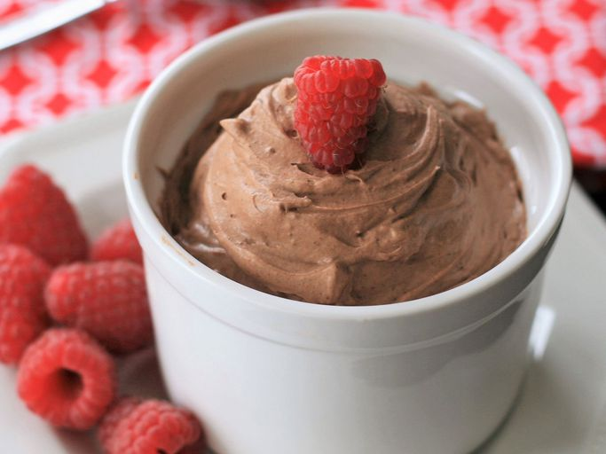

Ingredients
- 3 ounces cream cheese, softened
- ½ cup heavy cream
- 1 teaspoon vanilla extract
- ¼ cup powdered zero-calorie sweetener (such as Swerve)
- 2 tablespoons cocoa powder
- 1 pinch salt
steps
- Beat cream cheese in a large bowl with an electric mixer until light and fluffy.
- Turn mixer to low speed and slowly mix in heavy cream and vanilla.
Mix in sweetener, cocoa powder and salt until well incorporated.
Turn mixer to high and mix until light and fluffy, 1 to 2 minutes more.
- Serve immediately, or refrigerate for later.
Back to the home page